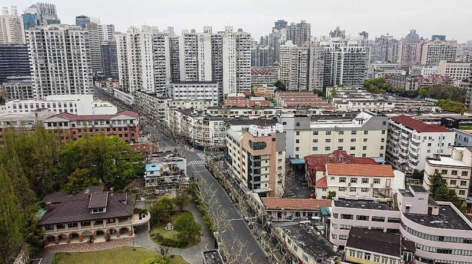

Thứ năm, 7/4/2022, 22:11 (GMT+7)
Người Trung Quốc tranh cãi chiến lược 'Không Covid'
Người dùng mạng Trung Quốc đưa ra quan điểm trái chiều về chiến lược "Không Covid" nước này đang duy trì, khi ca nhiễm tăng kỷ lục ở Thượng Hải.
Hơn hai năm qua, các thành phố trên khắp Trung Quốc đã áp dụng biện pháp phong tỏa, xét nghiệm hàng loạt, quy định phòng dịch nghiêm ngặt và biên giới quốc gia gần như đóng cửa để duy trì chiến lược "Không Covid". Tuy nhiên, khi biến chủng Omicron lây lan nhanh chóng với gần 23.000 ca nhiễm mới được báo cáo hôm nay, hệ thống y tế Trung Quốc đang chịu áp lực và các lệnh phong tỏa trở nên phổ biến hơn.
Trong hai tuần qua, tranh luận về chiến lược "Không Covid" trở nên gay gắt hơn khi Thượng Hải, thành phố lớn nhất Trung Quốc với hơn 25 triệu dân, áp lệnh phong tỏa từng phần rồi đến hoàn toàn. Dù vậy, ca nhiễm tại thành phố này tăng kỷ lục liên tục 6 ngày qua, với gần 20.000 ca mới được ghi nhận trong ngày 6/4.
Một bài viết của Wang Jie chỉ trích chiến lược phòng dịch đã được chia sẻ rộng rãi trên WeChat cuối tuần trước, khi đặt câu hỏi: "Covid không nguy hiểm hơn bệnh cúm, vậy chúng ta sợ cái gì?".
Wang chỉ ra các số liệu thống kê chính thức khẳng định không ai chết vì Covid-19 ở Thượng Hải và không trường hợp nghiêm trọng nào được ghi nhận dù thành phố đã báo cáo hơn 114.000 ca kể từ 1/3.

Khung cảnh vắng vẻ ở thành phố Thượng Hải hôm 5/4 do lệnh phong toả ngăn Covid-19. Ảnh: AFP.
"Trong đợt bùng phát Covid-19 ở Thượng Hải, gần 100% số người bị nhiễm đã tự khỏi trong khoảng 10 ngày mà không cần dùng thuốc", Wang viết, đồng thời lập luận rằng "nguồn lực y tế Thượng Hải đã cạn kiệt" vì chuyển sang các công việc liên quan Covid-19. "Có chuyện một số bác sĩ, vốn đã kiệt sức, không điều trị cho bệnh nhân nặng mà chăm sóc những bệnh nhân Covid-19 tràn đầy năng lượng đang nghịch điện thoại".
Chính phủ Trung Quốc bảo vệ chiến lược này, nói rằng dựa trên học thuyết "con người, sự sống là trên hết". Họ lập luận để virus lây lan sẽ dẫn đến số người tử vong đáng kể ở Trung Quốc. Giới chức cũng liên tục đề cập câu nói của Chủ tịch Tập Cận Bình rằng "bền bỉ là chiến thắng" để khuyến khích người dân kiên trì chiến lược này.
Theo What’s On Weibo, trang web theo dõi các xu hướng trên nền tảng mạng xã hội, những câu chuyện tích cực hoặc truyền cảm hứng đã được lan tỏa để cải thiện tinh thần của người dân.
Bên cạnh những chỉ trích, một nhóm dân số khác tin rằng Trung Quốc không đủ khả năng áp dụng chiến lược "sống chung với dịch" và nên tiếp tục xét nghiệm, "nhổ tận rễ" dịch bệnh.
"Dù tỷ lệ người dân đại lục tiêm vaccine khá cao, nhưng hàng chục triệu người vẫn chưa được tiêm. Nhiều người trong số họ đã lớn tuổi hoặc có bệnh nền, chẳng lẽ cứ để họ chết sao", Cindy Shen, một người ở Thượng Hải, cho hay. "Trung Quốc có thể chọn cách mặc kệ buông xuôi, nhưng một khi mở cửa biên giới và từ bỏ chính sách nhổ tận rễ, hệ thống y tế của chúng ta sẽ quá tải ngay lập tức".
Bên cạnh mối lo ngại ca nặng và tử vong do Covid-19, nhiều người dân Trung Quốc còn lo lắng các triệu chứng tiềm ẩn sau khi nhiễm virus. Một bài viết khẳng định Covid-19 sẽ gây ra 200 triệu chứng, như mất vị giác, khứu giác, làm suy giảm chức năng phổi, suy giảm chức năng sinh lý nam và tổn thương não. Trong video được chia sẻ rộng rãi đầu tuần này, một người đàn ông Hong Kong cho biết vẫn chưa khôi phục vị giác, dù đã âm tính một tháng sau khi mắc biến chủng Omicron.
Chia sẻ của người này chưa được xác minh, nhưng một nghiên cứu từ tạp chí khoa học Nature cho thấy 84% mọi người phục hồi chứng mất vị giác trong khoảng một tháng và 95% trong 6 tháng. Nghiên cứu này được công bố tháng 1/2021, trước khi biến chủng Omicron xuất hiện.
Li Tong, chuyên gia về bệnh truyền nhiễm từ Bệnh viện Youan Bắc Kinh, nói với tờ People’s Daily rằng tình trạng mất vị giác của người đàn ông trên là cá biệt và sẽ tự khỏi theo thời gian.

Nhân viên y tế mặc đồ bảo hộ nhận gói đồ từ người giao hàng ở lối vào một khu dân cư ở Thượng Hải hôm 5/4. Ảnh: AFP.
Một bộ phận người dân đồng tình duy trì chiến lược "Không Covid", nhưng đang đối mặt thực tế bị mắc kẹt trong các đợt phong tỏa kéo dài. Nỗi lo lắng của họ không phải mắc Covid-19, mà là tìm nguồn cung cấp nhu yếu phẩm. Một mối lo ngại nghiêm trọng là tranh giành thực phẩm tươi sống mỗi ngày trên các nền tảng trực tuyến.
"Khi tôi kiểm tra các ứng dụng, tất cả cửa hàng bán rau đều sạch trơn. Tôi thất vọng tràn trề, như một con sư tử châu Phi để vuột mất mồi khi đi săn", người dân họ Shi viết trên WeChat.
Một video được quay ở Thượng Hải cho thấy máy máy bay không người lái đang phát ra lời nhắc nhở hoặc mắng mỏ những người la hét phản đối từ cửa sổ nhà họ. Trong video khác, nhóm lớn lao động nhập cư ở thành phố Lang Phường, tỉnh Hà Bắc, phía bắc Trung Quốc, đối đầu nhóm phòng chống Covid-19 mặc đồ bảo hộ.
"Chúng tôi muốn chấm dứt phong tỏa. Không có tiền, chúng tôi sắp chết đói rồi", họ nói.
Huyền Lê (Theo SCMP)